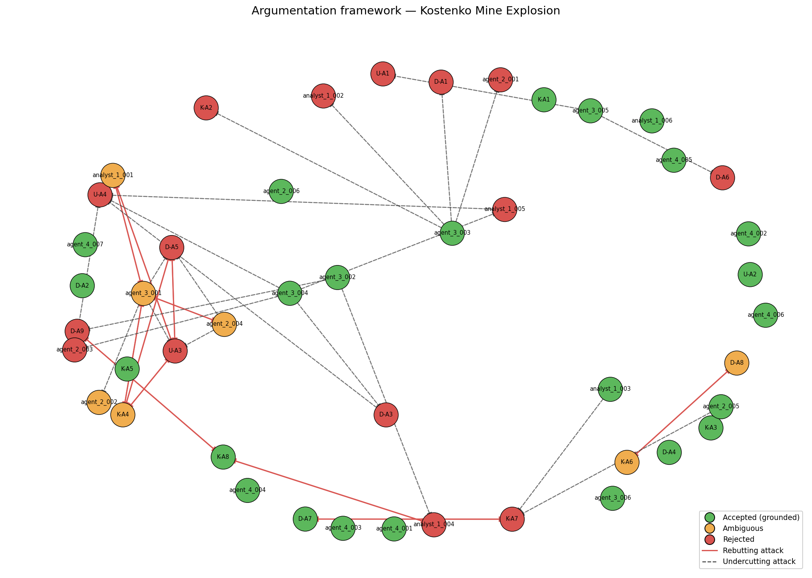

Date of incident: 2023-10-28
Run ID: kostenko_v6_20260515_170601_166521
On October 28, 2023, a catastrophic methane explosion occurred at the Kostenko Mine, operated by ArcelorMittal Temirtau in Kazakhstan. The incident began with a fire, rapidly escalating into a methane deflagration and subsequently a widespread coal dust explosion. This event resulted in significant casualties and extensive damage to the mine infrastructure.
The investigation into this accident was conducted by multiple expert teams, including specialists from KarTU im. Abylkas Saginov (Usembekov Meirambek Sabdenovich), a joint commission from NUST MISIS (Kolikov-Meshcheryakov), and DMT GmbH & Co. KG from Germany. These expert analyses, alongside outputs from a multi-agent analytical system, formed the basis of this formal report.
The immediate sequence of events involved an initial fire detected around 02:24, followed by a methane deflagration. This initial explosion then ignited accumulated coal dust, leading to a massive explosion that propagated throughout a significant portion of the mine. The full extent of casualties and the precise timeline of the propagation are still under detailed review, but the event necessitated immediate emergency response and evacuation efforts.
This report synthesizes the findings from these diverse expert sources and analytical agents to provide a comprehensive understanding of the accident's causes, sequence, and contributing factors. It aims to establish a clear, evidence-based narrative to inform future safety protocols and prevent recurrence.
The Kostenko Mine explosion has been classified primarily as a methane_explosion ([v2 classification]). A secondary classification of underground_gas_fire has also been assigned. The dominant causal factors identified across the analyzed arguments include methane_accumulation (TC-01) and an ignition_source_mechanical (TC-02), with significant contributions from spontaneous_combustion (TC-05) and coal_dust_hazard (TC-10) in the propagation phase.
Precedent analysis identified 11 potential matches, with two passing the initial filtering and thresholding. The top-ranked match is PREC-2021-04 — Shaktha Listvyazhnaya, an accident of the same primary type (methane_explosion) that resulted in 51 fatalities. This precedent shares the cause category 'TC-01' (methane_accumulation) and involved gross violations of safety regulations, similar to findings in the Kostenko case. The second match, PREC-2024-01 — Shaktha Alardinskaya, is an underground_gas_fire (secondary type) also linked to 'TC-01' (methane_accumulation) due to a roof fall displacing ignited methane.
These precedents underscore the recurring nature of methane-related hazards in underground mining and highlight the critical importance of addressing methane accumulation and ignition sources, as well as adherence to safety regulations, to prevent catastrophic events.
Analysis confirms that atmospheric pressure changes did not contribute to elevated methane release prior to the incident [K-A1, analyst_1_006]. Furthermore, no sudden gas outburst or significant gas-dynamic phenomenon preceded the ignition [D-A2, analyst_1_006]. The methane accumulation was a consequence of continuous release and inadequate ventilation measures [analyst_1_006].
Multiple independent analyses have excluded spontaneous combustion of coal in the goaf as a cause for the ignition [U-A2, D-A4, K-A3]. This conclusion is supported by consistent findings of low indicator gas ratios (R1, R2, R3) and the absence of CO and H2 in monitoring samples, as well as the classification of the coal seam as non-prone to self-ignition [U-A2, D-A4, K-A3]. Similarly, electrical equipment malfunction has been ruled out as an ignition source following post-accident inspections [K-A5].
The accident sequence is accepted as a multi-stage event: an initial gas fire occurred around 02:24, followed by a methane deflagration, which then transitioned into an initial coal dust explosion, culminating in a full-scale coal dust explosion propagating across the mine [D-A7, analyst_1_003, agent_2_005]. While an initial methane deflagration likely occurred, the catastrophic and widespread destruction over long distances indicates that coal dust served as the primary fuel for the main explosion [analyst_1_004]. However, there is a challenge to the assertion that coal dust was the sole primary fuel, with evidence suggesting a significant methane component in the initial and subsequent explosions, particularly a reported 99.99% methane reading [agent_3_002].
While overall ventilation quantities met design parameters, the mine's ventilation scheme, specifically the '1K-N-N-vt' combined system, created stagnant sub-conveyor zones where methane could accumulate to explosive concentrations [D-A3, analyst_1_005, agent_2_003]. This structural vulnerability, combined with continuous methane release from the K2 companion seam, contributed significantly to the hazardous atmospheric conditions [analyst_1_005, agent_2_003].
Accepted conclusions point to a systemic failure in production control and supervision [agent_2_006]. This is evidenced by the presence of prohibited items and hazardous materials in the working area, coupled with likely violations of procedures for operating equipment in gassy conditions. Furthermore, non-compliance with regulations concerning methane monitoring, ventilation design, degasification of companion seams, equipment certification, and coal dust explosion prevention has been identified as a significant factor [agent_4_001, agent_4_002, agent_4_003, agent_4_004, agent_4_005, agent_4_006].
Several hypotheses regarding the ignition source and explosion dynamics were considered and subsequently rejected based on the available evidence and argumentation.
The hypothesis that the ignition source was unknown and may never be identified, as proposed by DMT [D-A5], was rejected. While the exact ignition source remains contested, the presence of multiple potential ignition sources and specific operational contexts provides a stronger basis for concluding a probable cause rather than complete uncertainty [ATK-V5-004: D-A5 rebuts U-A3, ATK-V5-005: U-A3 rebuts D-A5]. Similarly, the claim that technical ventilation failure was excluded as a cause of elevated methane concentration [U-A4] was rejected. Although overall airflow met design parameters, the ventilation scheme's inherent structural vulnerability in sub-conveyor zones, which allowed methane accumulation, directly contradicts this assertion [ATK-V5-010: D-A3 undercuts U-A4, ATK-V5-011: agent_2_003 undercuts U-A4, ATK-V5-012: agent_3_004 undercuts U-A4, ATK-V5-044: analyst_1_005 undercuts U-A4].
The assertion that the K2 seam was the primary source of elevated methane [D-A1, K-A2, agent_2_001, analyst_1_002] has been rejected in its most definitive form. While the K2 seam was a significant contributor, arguments were raised that the working seam (K3) could have also contributed substantially, particularly given the potential for geological dynamic hazards [agent_3_003] and that the evidence did not fully exclude the K3 seam's contribution [ATK-V5-013: agent_3_003 undercuts K-A2, ATK-V5-028: agent_3_003 undercuts D-A1, ATK-V5-037: agent_3_003 undercuts analyst_1_002, ATK-V5-039: agent_3_003 undercuts agent_2_001].
Furthermore, the conclusion that coal dust was the primary fuel for the full-scale explosion [D-A9, analyst_1_004] has been rejected as the sole driver. While coal dust was a critical fuel, evidence suggesting a significant methane component in the initial and subsequent explosions, including a 99.99% methane reading, challenges the exclusivity of coal dust as the primary fuel [agent_3_002].
Finally, the specific claim that the initial methane explosion occurred near section 20 of the longwall, distinct from the initial fire location [D-A8], is rejected due to conflicting evidence regarding the epicenter and the sequence of events, leading to ambiguity rather than a definitive conclusion [ATK-V5-019: K-A6 rebuts D-A8, ATK-V5-027: agent_2_005 undercuts K-A7].
The precise ignition source remains a subject of contention. While mechanical sparking from the armored face conveyor (AFC) chain operating in a methane-rich zone is considered the most probable source by some analyses [K-A4, analyst_1_001, agent_2_004], this is directly challenged. Arguments posit that the evidence for AFC chain sparking is circumstantial and that the presence of other ignition-capable items, such as an angle grinder, aerosol can, and synthetic oil, presents a strong alternative [U-A3, agent_3_001].
This conflict is reflected in the rejection of arguments claiming the AFC chain was the most probable source [ATK-V5-016: agent_3_001 rebuts K-A4, ATK-V5-017: K-A4 rebuts agent_3_001, ATK-V5-034: analyst_1_001 rebuts agent_3_001, ATK-V5-035: agent_3_001 rebuts analyst_1_001, ATK-V5-042: agent_2_004 rebuts agent_3_001, ATK-V5-043: agent_3_001 rebuts agent_2_004]. The claim that the ignition source is unknown and may never be identified [D-A5] is also contested by arguments identifying specific potential sources [ATK-V5-004: U-A3 rebuts D-A5, ATK-V5-005: D-A5 rebuts U-A3].
Consequently, the precise ignition location remains ambiguous [agent_3_005]. While some evidence points to the upper part of longwall 48K3-Z, sections 142-145, as the initial fire location [U-A1, D-A6], other analyses suggest the initial methane explosion occurred in the lower area near section 20, distinct from the fire [D-A8], while seismic data points to the upper part of the longwall as the epicenter [K-A6].
The primary fuel for the large-scale explosion is also debated. One perspective holds that coal dust was the primary fuel due to the extensive propagation and destruction [D-A9, analyst_1_004]. However, this is challenged by arguments emphasizing the significant role of methane, citing a 99.99% methane concentration reading and evidence of worker survivability without respirators immediately post-shockwave, suggesting methane was a substantial contributor, if not primary, to the initial and subsequent explosions [K-A8, agent_3_002].
Several open questions identified by the original investigators remain unresolved or directly correspond to the contested areas:
* OQ-1: Was the shearer operating at the time of ignition? This remains relevant for assessing the probability of mechanical sparking from the shearer versus the AFC [D].
* OQ-2: Was the angle grinder used at or near the ignition location (sections 142-145)? Resolving this would strengthen or defeat arguments regarding external ignition sources [D, U].
* OQ-3: What was the actual CH4 concentration distribution in the goaf and crosscut 13 immediately before the explosion? This is critical for resolving conflicting claims about the initial explosion location [D, K].
* OQ-4: Were post-accident coal dust samples from conveyor lines explosive? Confirmation would support or refute the conclusion that coal dust was the primary fuel [D].
* OQ-5: What was the exact sequence of explosion propagation through the mine? This is required to definitively determine whether the full-scale explosion was methane or dust-driven [D, K].
The role of seismic activity as a potential trigger for methane release or ignition was also noted as not sufficiently explored [agent_3_006].

Node colors: green = accepted (grounded extension), orange = ambiguous (in some preferred extension but not all), red = rejected (in no preferred extension). Edges: solid red = rebutting attack, dashed = undercutting attack.
The investigation identified several significant violations of mining safety regulations, which contributed to the hazardous conditions leading to the Kostenko Mine explosion.
Non-compliance with Methane Monitoring Limits and Automatic Cutoff (REG-01): Evidence suggests methane accumulation in sub-conveyor zones that was not adequately detected or controlled. This indicates a failure to adhere to methane monitoring limits and potentially automatic cutoff requirements, directly contributing to the creation of an explosive atmosphere [agent_4_001].
Non-compliance with Ventilation Scheme Design (REG-02): The '1K-N-N-vt' combined ventilation scheme created structural vulnerabilities leading to methane accumulation in sub-conveyor zones. This represents a violation of requirements for ventilation scheme design, which must prevent such stagnant zones [agent_4_002].
Non-compliance with Degasification of Companion Seams (REG-03): The K2 seam, identified as a significant methane source, was not adequately pre-drained. This failure to implement required degasification measures for companion seams contributed to methane accumulation in the goaf and the subsequent explosion [agent_4_003].
Violation of Equipment Certification Requirements (REG-05): The presence of non-explosion-proof tools, such as an angle grinder, and flammable materials (aerosol can, synthetic oil) at or near the ignition location likely served as the ignition source. This constitutes a violation of regulations mandating the use of explosion-proof equipment in underground workings [agent_4_004].
Non-compliance with Coal Dust Explosion Prevention (REG-06): Evidence suggests inadequate dust control measures, allowing for the propagation of a large-scale explosion. This indicates a failure to implement mandatory dust control measures, such as stone dusting and the maintenance of dust barriers, as required by regulation [agent_4_005].
Failure of Internal Production Control System (REG-09): The internal production control system failed to identify and rectify hazardous conditions, specifically the methane accumulation in sub-conveyor zones and the presence of prohibited ignition sources. This points to a systemic failure in the mine's safety management and oversight [agent_4_006].
Concerns Regarding Atmospheric Data Integrity (REG-10): While not directly proven, the evidence of methane accumulation in sub-conveyor zones raises concerns about the integrity and comprehensiveness of atmospheric monitoring data. This potentially indicates a violation of regulations ensuring the accuracy and anti-falsification of atmospheric monitoring data [agent_4_007].
These regulatory violations collectively created and exacerbated the hazardous conditions, significantly increasing the likelihood and severity of the accident. Compliance with these regulations would have likely prevented or substantially mitigated the methane accumulation and ignition events.
| Metric | Value |
|---|---|
| combined_arguments | 46 |
| expert_arguments | 21 |
| agent_arguments | 25 |
| attacks_detected | 44 |
| supports_detected | 25 |
| accepted | 24 |
| ambiguous | 7 |
| rejected | 15 |
| preferred_extensions | 4 |
_Reproducible from run artifacts in runs/kostenko_v6_20260515_170601_166521/._